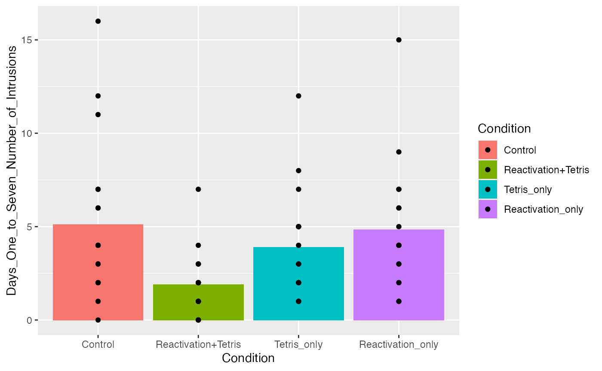

lab4
Lab4.Rmd- prove t test and anova are the same.
library(tidyverse)
#> ── Attaching packages ─────────────────────────────────────── tidyverse 1.3.1 ──
#> ✓ ggplot2 3.3.5 ✓ purrr 0.3.4
#> ✓ tibble 3.1.6 ✓ dplyr 1.0.7
#> ✓ tidyr 1.2.0 ✓ stringr 1.4.0
#> ✓ readr 2.0.2 ✓ forcats 0.5.1
#> Warning: package 'tidyr' was built under R version 4.1.2
#> ── Conflicts ────────────────────────────────────────── tidyverse_conflicts() ──
#> x dplyr::filter() masks stats::filter()
#> x dplyr::lag() masks stats::lag()
example_data <- tibble(Group = rep(c("A","B"), each = 5),
DV = c(2,4,3,5,4,7,6,5,6,7))
t_object <- t.test(DV~Group, data = example_data, var.equal=TRUE)
aov_object <- aov(DV~Group, data=example_data)
class(t_object)
#> [1] "htest"
class(aov_object)
#> [1] "aov" "lm"
summary(t_object)
#> Length Class Mode
#> statistic 1 -none- numeric
#> parameter 1 -none- numeric
#> p.value 1 -none- numeric
#> conf.int 2 -none- numeric
#> estimate 2 -none- numeric
#> null.value 1 -none- numeric
#> stderr 1 -none- numeric
#> alternative 1 -none- character
#> method 1 -none- character
#> data.name 1 -none- character
sum_aov <- summary(aov_object)
t_object
#>
#> Two Sample t-test
#>
#> data: DV by Group
#> t = -4.111, df = 8, p-value = 0.003386
#> alternative hypothesis: true difference in means between group A and group B is not equal to 0
#> 95 percent confidence interval:
#> -4.058445 -1.141555
#> sample estimates:
#> mean in group A mean in group B
#> 3.6 6.2
aov_object
#> Call:
#> aov(formula = DV ~ Group, data = example_data)
#>
#> Terms:
#> Group Residuals
#> Sum of Squares 16.9 8.0
#> Deg. of Freedom 1 8
#>
#> Residual standard error: 1
#> Estimated effects may be unbalanced
# are the p-values the same?
t_object$p.value
#> [1] 0.003386143
sum_aov[[1]]$`Pr(>F)`[1]
#> [1] 0.003386143
t_object$p.value == sum_aov[[1]]$`Pr(>F)`[1]
#> [1] FALSE
round(t_object$p.value, digits = 10) == round(sum_aov[[1]]$`Pr(>F)`[1], digits = 10)
#> [1] TRUE
# are the F and t values the same?
t_object$statistic^2
#> t
#> 16.9
sum_aov[[1]]$`F value`[1]
#> [1] 16.9
library(data.table)
#>
#> Attaching package: 'data.table'
#> The following objects are masked from 'package:dplyr':
#>
#> between, first, last
#> The following object is masked from 'package:purrr':
#>
#> transpose
all_data <- fread("data/lab4_data.csv")
all_data$Condition <- as.factor(all_data$Condition)
levels(all_data$Condition) <- c("Control",
"Reactivation+Tetris",
"Tetris_only",
"Reactivation_only")
summary(aov(Days_One_to_Seven_Number_of_Intrusions ~ Condition, all_data))
#> Df Sum Sq Mean Sq F value Pr(>F)
#> Condition 3 114.8 38.27 3.795 0.0141 *
#> Residuals 68 685.8 10.09
#> ---
#> Signif. codes: 0 '***' 0.001 '**' 0.01 '*' 0.05 '.' 0.1 ' ' 1
aov_object <- aov(Days_One_to_Seven_Number_of_Intrusions ~ Condition, all_data)
aov_print <- papaja::apa_print(aov_object)
#> For one-way between subjects designs, generalized eta squared is equivalent to eta squared.
#> Returning eta squared.
aov_print$full_result
#> $Condition
#> [1] "$F(3, 68) = 3.79$, $p = .014$, $\\hat{\\eta}^2_G = .143$, 90\\% CI $[.018, .255]$"
ggplot(all_data, aes(x=Condition,
y=Days_One_to_Seven_Number_of_Intrusions,
fill = Condition ))+
geom_bar(stat="summary",fun="mean")+
geom_point()
The main effect of tetris therapy was significant, \(F(3, 68) = 3.79\), \(p = .014\), \(\hat{\eta}^2_G = .143\), 90% CI \([.018, .255]\).